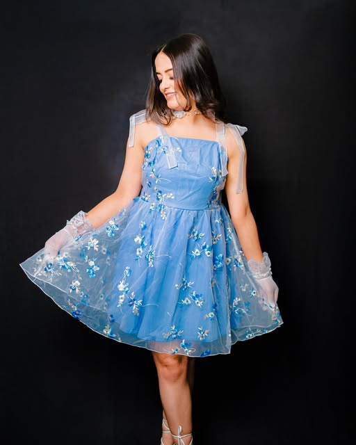

FASHION PHOTOGRAPHY
Unmistakably you.
Fashion and portrait photography with a personal point of view.
Plan your shoot ↗
THE LIFESHOTS COLLECTION
Stories worth keeping.
14 photographs · Fashion


Your story.
Your plans.
Lifeshots offers fashion photography and portrait sessions. Share your brief, how you intend to use the photographs and any visual references when you inquire.
Discuss the location, styling, desired images and usage rights directly with the team. Availability, pricing and deliverables are agreed before booking.
Call +91 94655 73973 or prepare an inquiry.